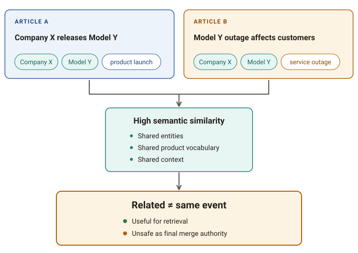
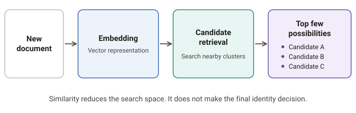
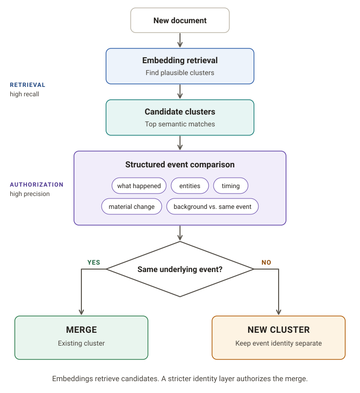
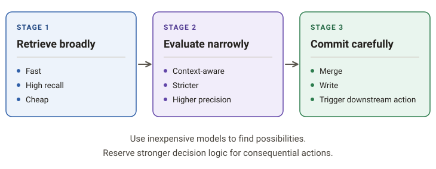

Embeddings are very good at answering a useful question:
“What looks similar to this?”
That is not the same as answering:
“Does this belong to the same event?”
I learned that distinction while working on story clustering for an AI news system. At first, semantic similarity looked like the obvious foundation for grouping related articles. Embed each article, compare the vectors, and merge items that are close enough.
That works—until it doesn’t.
The failure mode is subtle because the wrong clusters often look reasonable at first glance.
Similar topic, different event
Suppose two articles are both about the same company and the same product area.
One reports that a company released a new model.
Another reports, two days later, that the same model caused a major outage.
Those articles may be semantically close. They share the same company, product name, technical vocabulary, and surrounding context.
But they are not the same event.
A pure similarity rule can easily blur the distinction:

From a retrieval perspective, that similarity is useful.
From an identity perspective, it can be wrong.
The opposite problem also happens
Now consider two articles describing the same underlying event from very different angles.
One headline focuses on the product launch.
Another focuses on the company’s strategy.
A third emphasizes a benchmark result.
The language may differ enough that the pairwise similarity score drops below the threshold you picked.
So the same system can fail in both directions:
- false merge: similar topic, different event
- false split: same event, different framing
That is where a single similarity threshold starts to feel less like a solution and more like a compromise.
Thresholds are useful, but they are not identity
Similarity thresholds are still valuable.
They can reduce the search space dramatically.
Instead of comparing a new document against every existing cluster, embeddings can retrieve a small number of plausible candidates:

That is a great job for vector similarity.
The mistake is letting retrieval make the final clustering decision.
A score of 0.72 does not inherently mean “same
event.”
It means the representations are close according to the embedding model.
Those are different claims.
Separate retrieval from authorization
The architecture I now prefer separates the two jobs.
Embeddings answer:
Which existing clusters are worth inspecting?
A second decision step answers:
Does this document actually describe the same underlying event?
Conceptually:

That separation is useful because each component is doing what it is best at.
The embedding model is fast and broad. It narrows the candidate set.
The comparison stage can be stricter and more deliberate. It can look at details that semantic proximity alone may blur together:
- what actually happened
- which entities were involved
- when it happened
- what changed
- whether one article is merely background or reaction
- whether the two documents describe the same material event
In the story grouper I’m working on now, embeddings retrieve candidate stories, but they do not authorize the merge by themselves.
That distinction ended up being much more important than I expected.
Why this matters outside news
This is not really a news-specific problem.
The same pattern appears anywhere we try to group semantically related records into real-world units.
| Domain | Similarity can retrieve… | Identity still has to decide… |
|---|---|---|
| Cybersecurity | Related alerts | Same incident or separate attacks? |
| Customer support | Similar tickets | Duplicate issue or different failure? |
| Legal | Related filings | Same matter or merely similar doctrine? |
| Research | Nearby papers | Same finding or different contribution? |
| Product feedback | Similar complaints | One root cause or multiple problems? |
In all of these cases, semantic similarity is extremely useful.
It just answers a different question than identity.
The broader design pattern
This has become one of the more useful patterns I’ve taken away from building NLP systems:
Use cheap, broad models to retrieve possibilities. Use stricter logic to make consequential decisions.
That can mean an LLM-based comparator, a rules layer, structured metadata checks, a cross-encoder, or some combination of them.
The exact implementation depends on the domain.
The architectural idea is more general:

That split also makes the system easier to reason about.
If a document never reaches the correct candidate cluster, the retrieval layer is probably the problem.
If the correct candidate is retrieved but the wrong merge happens, the decision layer is probably the problem.
That is much easier to debug than one opaque similarity threshold controlling everything.
The lesson
Embeddings are excellent at finding things that look related.
That does not mean they should decide what is identical.
When grouping documents into real-world events, incidents, issues, or themes, similarity is often best treated as candidate generation, not final authority.
Sometimes the important architectural improvement is not choosing a better threshold.
It is realizing that the threshold was being asked to solve the wrong problem.